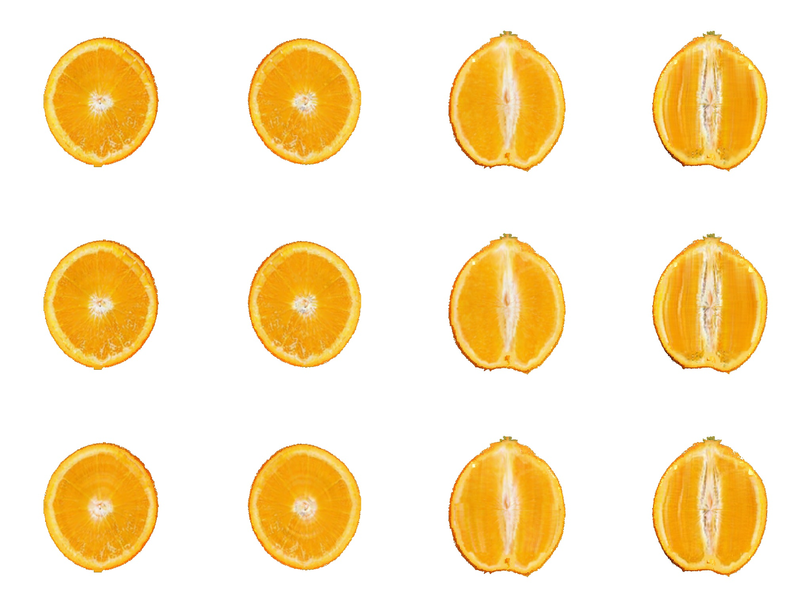
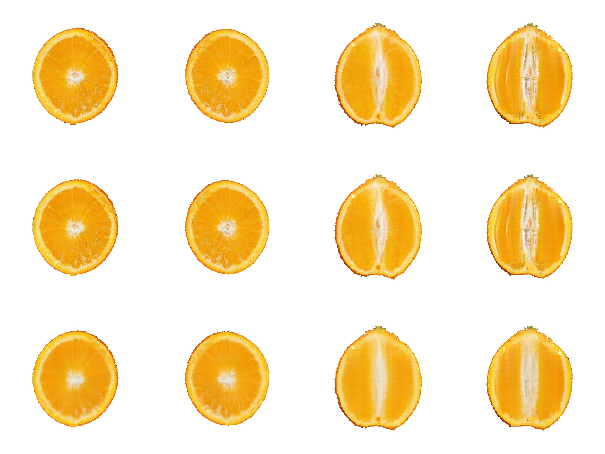

The object as an O‑Voxel grid, end to end
Every pixel from the dual grid and the occupancy — no Gaussian is rendered anywhere on this page
What this is, and what it is not
The paper's pipeline stores appearance on a two-level cube lattice and draws it through the 3D Gaussian rasteriser: the cells are splatted. This page is a separate build in which nothing is splatted. The object is an O‑Voxel dual grid and a per-cell interior field, the cut face is the closed-form polygon of a plane against the occupancy, and both go into one nvdiffrast pass. It answers a question the paper cannot: what does this object look like when the representation is carried all the way through, rather than converted at the surface and splatted underneath?
code/ovoxel_native/, trained separately. The paper's
tables are unaffected by anything here, and where the two disagree the paper's numbers are the ones
that were produced by the pipeline it describes.
The pipeline, end to end
One program, seven objects, no per-object setting anywhere in it. What follows is every step from a released Gaussian model to a cuttable object, then the seven objects it produces, then the experiments that decided each step — including the ones that decided a step should not be taken.
All seven under the pipeline as it stands: the shape-derived split, the anisotropic field prior, and the target drawn from the two photographs either side of the depth rather than averaged. Their numbers are the "+sampled" columns below.
Step 1 — the object becomes a lattice, and the skin is pinned
A released 3D‑Gaussian model is quantised onto a two-level cube lattice,
\(h_c = L/125\) with the shell at \(h_c/2\). The dual grid and the occupancy come from that and
are fixed for the run. Six exterior views paint the skin before training starts;
SHELL_PIN=1 then freezes it, so the cut faces can never repaint the rind they are seen
through, and SEC_SKIP_OUTER=0.10 keeps the section loss off the outermost tenth of each
render from the other side. The sections own the interior, the six exterior views own the
skin.
Step 2 — how many planes each family gets
A transverse plane moves along the polar axis; a longitudinal plane turns about it. Resolving both at the same spacing takes planes in the ratio of the axis extent to half the circumference, so with the total held at 26 for every object:
N_H = clip(round(26 * L / (L + pi * r)), 2, 24) # mvcams.py N_V = 26 - N_H
\(L\) and \(r\) are measured from the object's own coarse cells, with the level‑1 skin rows excluded — they are half the spacing and all of them at the rim, and averaging over them pulls the radius up 13% and moves the split by a whole plane. This gives the counts under the videos above: 14/12 for the orange, 4/22 for the doughnut, and nothing is chosen by hand. The derivation is set out in full below, including two constants in it that are wrong and what happens when they are corrected.
Step 3 — what a gradient step sees
One transverse plane, one longitudinal plane and one exterior view together, so a cell both families cross meets both constraints in the same backward pass rather than alternately. Each family's loss is scaled by its plane count over the number of groups, which keeps its total weight per outer iteration equal to its plane count. Before the plane is drawn it is moved: a transverse depth is offset by up to half a step, so over a run it sweeps the cells between the supervised depths instead of re-cutting the same ones.
Step 3b — which photograph the plane is shown
The transverse photographs are ordered by depth and there are two to twelve of them for fourteen or so planes, so a plane sits between two of them. The assignment used to be integer division — planes 1 to 4 get one photograph, 5 to 8 the next — and each switch drew a line across the polar axis that every longitudinal cut crossed. That was replaced by a continuous blend: the two photographs either side of the depth, brought onto a common disc and mixed at the fractional part. The banding went away.
An average of two sections of two different oranges is a picture neither of them is, and averaging removes structure by construction. Measured against the raw photographs, the blended target keeps 86% of their gradient on the orange, 90% on the watermelon, 97% on the apple — structure the loss can never ask for, because it is not in the target.
REF_SAMPLE=1 draws one of the two instead, with probability equal to the mixing
weight. The expectation is the blend, so the depth assignment is unchanged in the mean and the
banding stays away; what changes is that the target on any step is a photograph rather than an
average of two. A plane sees both over a run, in the right proportions — it is the difference
between fitting a mean and fitting samples from a distribution with that mean. The variance it adds
is what the field prior absorbs.
Step 4 — render, and build the target from the render
The exterior triangles behind the plane and the cut polygon of the plane against the occupancy go
into one nvdiffrast pass, so the depth test composes them. Then — and this is the step most
easily stated wrongly — the loss is not the render against the photograph.
section_target takes both and returns a third image: the foreground comes from the
rasteriser's accumulated opacity rather than from "differs from white", the target is initialised as
a copy of the render rather than as white, and each connected component is matched to the reference
by hole count and then by coordinates. The photograph supplies appearance as a function of position
within the section; the render supplies the silhouette.
Step 5 — the loss
L = sum over this step's planes of w_family * | render - target |
+ 0.1 * mean over sampled face-sharing cell pairs of (c_a - c_b)^2,
weighted 4x on the two lattice axes perpendicular to the polar axis
Mean absolute error per plane, and one prior. The prior is the only term beyond the pixel loss that this pipeline turns on, and both its weight and its direction were measured rather than assumed:
- Its direction. Neighbouring cells agree best along the polar axis, by a factor of 1.24 to 1.76 depending on the object — because the transverse planes are perpendicular to that axis, stack along it, and each is supervised and jittered, so it is the direction the data pins down. The columns run along it and are made of disagreement across it, so the prior is weighted on the two perpendicular directions. Weighting the polar axis, which is what the artefact suggests at first sight, would add a constraint where the data already provides one.
- Its weight. Swept at 0.03, 0.1, 0.3 and 1.0 on the orange: 0.03 is too little, 1.0 smooths away real structure, and 0.1 and 0.3 are indistinguishable. Annealing it in either direction changes nothing to the fourth decimal place.
Step 6 — what takes the gradient
| tensor | what it is | learning rate | constraint |
|---|---|---|---|
interior | an 8-d latent per solid cell through a shared two-stage MLP | feat 0.005, MLP 0.002 | clamped to [0,1] |
surf_rgb | one RGB per dual vertex — the skin | 0.02 | frozen |
dual_v, split_w | the dual grid's offsets and split weights | 1e‑3 | split weights in (0,1) |
Adam, no schedule — a schedule was tried and made it worse, twice. 325 outer iterations, which is 4,225 to 7,475 gradient steps depending on the split.
Step 7 — what is scored, and what is watched
Twelve planes per object are held out. Six are validation and the probe reads only those; six are test and are not looked at until the run is over. Before this split the probe and the reported score were the same planes, so every "this arm stopped improving" was read off the set the arm was then scored against. Every number in the next section is on the test half.
What the pipeline produces, on seven objects
The same program on all seven, with its own control on each: the identical run with the prior switched off. DreamSim against each object's own photographs, on the test half.
| object | split | photos h / v |
transverse | longitudinal | no gradient | |||||
|---|---|---|---|---|---|---|---|---|---|---|
| plain | +prior | +sampled | plain | +prior | +sampled | plain | +prior | |||
| cake | 15/11 | 2 / 2 | 0.4560 | 0.4560 | 0.3692 | 0.4796 | 0.4853 | 0.4223 | 6,781 | 1 |
| pomegranate | 14/12 | 2 / 2 | 0.2488 | 0.2543 | 0.2046 | 0.4864 | 0.4878 | 0.4263 | 21,491 | 0 |
| loaf | 11/15 | 3 / 3 | 0.3965 | 0.3884 | 0.3691 | 0.4553 | 0.4415 | 0.4167 | 37,387 | 0 |
| orange | 14/12 | 3 / 3 | 0.0796 | 0.0781 | 0.0736 | 0.2049 | 0.1923 | 0.2018 | 36,977 | 1 |
| watermelon | 13/13 | 10 / 12 | 0.1638 | 0.1651 | 0.1594 | 0.2052 | 0.2008 | 0.1910 | 40,524 | 0 |
| apple | 14/12 | 2 / 2 | 0.2513 | 0.2501 | 0.2631 | 0.3389 | 0.3318 | 0.3493 | 41,939 | 0 |
| doughnut | 4/22 | 1 / 1 | 0.1532 | 0.1531 | 0.1546 | 0.5334 | 0.5367 | 0.5378 | 27,986 | 0 |
Sorted by how many photographs each object has, because that turns out to order the result. Drawing a photograph instead of averaging two improves five objects of seven, and by several times what the prior manages — the cake by 19.0% on the transverse column and 11.9% on the longitudinal, the pomegranate by 17.8% and 12.4%, on both of which the prior had done nothing at all. The doughnut is the control nobody arranged: it has one photograph per family, so there is nothing to draw, and its numbers move by 0.001. That the effect vanishes exactly where the mechanism cannot operate is the best evidence that it is the mechanism.
Two objects are worse, the apple and the doughnut, and the apple is not explained by photograph count — it has two, like the cake and the pomegranate, which gain most. The orange gains 7.5% on the transverse column and loses 4.9% on the longitudinal. So this is not uniform either, and the claim is five of seven rather than all of them.
Which half of it works
Drawing rather than averaging is two changes at once: the target stops being a mean, and it becomes random. They can be separated by drawing from the whole family instead of from the two photographs either side of the depth — same randomness, no depth assignment at all. That is only a different experiment where a family has more than two photographs, which is the watermelon with ten and twelve, and the orange and the loaf with three each.
| object | photos | transverse | longitudinal | ||||
|---|---|---|---|---|---|---|---|
| averaged | drawn from two | drawn from all | averaged | drawn from two | drawn from all | ||
| watermelon | 10 / 12 | 0.1651 | 0.1594 | 0.1968 | 0.2008 | 0.1910 | 0.2865 |
| orange | 3 / 3 | 0.0781 | 0.0736 | 0.0799 | 0.1923 | 0.2018 | 0.2051 |
| loaf | 3 / 3 | 0.3884 | 0.3691 | 0.3977 | 0.4415 | 0.4167 | 0.4526 |
Drawing from the whole family is worse than both on every object and in every column, and worst where it differs most: the watermelon has the most photographs, so its uniform draw is furthest from its neighbour draw, and its longitudinal column degrades 50%. So the two halves come apart cleanly. Not averaging is what works; randomness on its own has no value, and spending it on the depth assignment destroys information the ordering carries.
So the honest claim for this term is not that it reconstructs better. It is that it removes unconstrained cells, and that claim is supported seven times out of seven. The price is also consistent: the field carries 5–21% less structure between neighbouring cells on every object.
Every experiment, and what each one was asking
In the order they were run. Each entry says what the question was, what was changed, and what came back — including the ones that failed, which are most of them. Numbers within a group are comparable; numbers across groups are not always, because the held-out split changed partway through and is marked where it does.
Group A — how the supervision is assigned
| experiment | the question | what happened |
|---|---|---|
| the depth blend | the transverse family picked its photograph by integer division, so the photograph changed abruptly at a few depths. Does giving it the continuous assignment the longitudinal family already had remove the banding? | kept. The jump at the switch depths falls from 5.14 to 3.78 in units of the profile's own median jump, and the held-out probe from 0.03081 to 0.02958. A control that re-frames without interpolating measures 5.20, so the improvement is the interpolation and not the re-framing |
| the joint step | a step saw one plane, so a shared cell was pulled to one photograph and then the other. Does putting one of each family in every step help? | kept. 4.5% on the longitudinal column |
| reference follows the jitter | a plane jittered most of the way to its neighbour is still supervised by its own photograph. Should the target follow? | no. 0.0867/0.2255 against 0.0859/0.2257, inside the noise, and it costs half again per step |
| drawing from the whole family instead | drawing is two changes at once — not a mean, and random. Separate them: keep the randomness, throw the depth assignment away | no, and it isolates the mechanism. Worse than both the average and the neighbour draw, in every column of all three objects it can differ on, and worst on the watermelon, which has the most photographs and so the largest difference — its longitudinal column degrades 50%. Not averaging is the half that works |
| drawing a photograph instead of averaging two | the blend removes structure by construction — an average of two oranges' sections is a picture neither is. Draw one of the two at the mixing weight instead, so the expectation is unchanged but each target is real? | kept, and the largest single improvement measured. Five objects of seven improve, several times more than the prior does: the cake 19.0% and 11.9%, the pomegranate 17.8% and 12.4%. The doughnut has one photograph per family, so nothing can be drawn, and it moves 0.001 — the effect disappears exactly where the mechanism cannot act. The apple is worse and is not explained |
| plane counts from the object's shape | 16/10 was fixed for every object. Should a long object get more transverse planes and a round one fewer? | kept, and reported as a trade. Longitudinal better on 6 of 7, transverse worse on 6 of 7. The orange improves on both and is the only one that does — a conclusion drawn from it alone would have been wrong, and was |
| the two constants in that rule | the rule balances L/Nh against πr/Nv, but the sampler lays down 1.5Nh depths and r is a mean where the structure is at the rim. Correct both? | measured, not adopted. The two spacings now agree within 10% on six of seven objects where the orange was 6.00 against 14.46. But the split moves to 9/17, the transverse family is the one that sweeps, and 19.6% of the cells stop receiving a gradient |
| the supervised band, measured | the band is the middle two thirds of the sweep, so the caps get no transverse plane. Choose it by where a plane actually cuts something? | no. Best transverse figure anywhere, 0.0715, with 17% of the object receiving no gradient at all. Widening the band while keeping the plane count gives 0.0734/0.2047 — the transverse column improves and the longitudinal loses everything the prior gained, because there are no photographs of the caps and the outer planes are handed pictures of the middle |
Group B — giving the longitudinal family more of the object
| experiment | the question | what happened |
|---|---|---|
| sliding the longitudinal plane | the transverse family jitters and the longitudinal one is pinned. Slide it along its normal too? | no. It takes the plane off the axis and every longitudinal photograph is a central section, so the target stops describing the cut. 36% off the transverse column |
| turning it about the axis | the same degree of freedom, on the parameter that plays the same role — the plane stays through the axis, so it stays a central section | works, expensively. The family's reach goes from 15.9% of the cells to 97.7%, the longitudinal column improves 16%, the transverse column costs 44%. Coverage saturates at 0.5 and the training effect at 0.25, so the geometry does not predict the optimisation — which matters because it was used to predict it, and was wrong |
| four times the planes | buy coverage with budget instead: 104 planes at the same number of steps | works, more expensively. 0.1083/0.1826. Pinned sheets cover in proportion to their number, so it takes eight times the planes to match what turning does at one |
| gradient weight apart from plane count | the split changes coverage and gradient weight together. Which half does the work? | the planes. 9:17 of gradient on 14/12 planes reproduces 14/12, not 9/17. A clean negative that localises the mechanism |
Group C — losses other than the pixel loss
| experiment | the question | what happened |
|---|---|---|
| patch distributions instead of pixels | the photograph is of an orange, not this one, so part of what the pixel loss asks for is impossible. Compare the two as patch sets instead? | settled before training. Sliced Wasserstein and Jensen–Shannon hold the photographs 35× and 60× further apart than within one, against 10.7× for MSE — they would make the target less consistent, not more. Chamfer is 2.44, the only one below the pixel loss |
| Chamfer, four times | it asks about the vocabulary of patches and not the amounts. Does that survive training? | no, four times. With the families sharing 14% of the cells it is worse in every column and monotonically in its weight; at 90% it moves both columns under 1% and quadrupling the weight moves them no further; at 56% it trades 2.5% of one column for 2.4% of the other; and as a prior on unphotographed planes it is mildly harmful and cancels the field prior's gain. The weight came from the gradient magnitudes for three of the four, so scale is not the explanation |
| a prior on planes with no photograph | the sparse-view literature regularises on unobserved views. Sample a plane nobody photographed, and ask its patches to come from the family's vocabulary? | no. 0.0820/0.2082 against 0.0804/0.2061, and the probe degrades slightly more rather than less. The argument was that Chamfer's blindness to position is harmless where position is unknown; the measurement disagreed |
| cross-section consistency | two planes crossing the same cells should agree on the line they share | not pursued. Two planes meet in a line, so this reaches about 1% of either family's cells per step. And the two renders were measured to agree to within 0.012 — an earlier figure of 0.082 was an artefact of comparing nearest pixels across two cameras viewing a line edge-on |
| the anisotropic field prior | the field has no spatial prior at all: a cell no plane crosses is referred to by nothing in the objective. State the missing coupling as a penalty, on the axes a measurement says are loose | kept — this is the one. Both columns improve on three objects of seven, and the cells receiving no gradient go to zero on all seven |
Group D — the representation itself
| experiment | the question | what happened |
|---|---|---|
| three interpolating planes | a per-cell field has no spatial prior by construction. Replace it with a triplane, where a cell's feature is interpolated and so cannot be set alone? | no. 0.0948/0.2242, worse in both columns, and it did not reduce the overfitting it was meant to. It fills the cells no plane reaches and removes the ability to say anything at the scale of one cell |
| triplane plus a per-cell residual | keep both: an interpolating base for what a smooth field explains, a residual for what only that cell can | recovers most of the loss. 0.0820/0.2113 against 0.0804/0.2061, so the missing cell-scale expressiveness was indeed why the triplane failed — but it does not beat the per-cell field either |
| decay on the residual only | penalise the residual and not the base, so the run prefers the smooth explanation and reaches for a cell's own freedom only where it must | wins the transverse column and should not be used. 0.0772, the best with full coverage — and the field carries 36% less structure, 0.061 against 0.095 between neighbours. Visible by eye, invisible to DreamSim, which moves 1% |
| sampling the field per fragment | sample_interior is defined at any point but was only called at the cut polygon's corners, with colour interpolated between them. Sample at the fragment instead? | for drawing, not for training. Drawing any checkpoint this way takes the transverse column from 0.0804 to 0.0771 and leaves the longitudinal alone. Training through it gives 0.0821 with a lower training loss — the corner interpolation was acting as a smoother, and removing it let the run chase detail that does not generalise |
Group E — the optimisation
| experiment | the question | what happened |
|---|---|---|
| a validation/test split | the probe and the reported score were the same twelve planes. How much of what was concluded came from watching the test set? | adopted, and it changed the readings. Six and six. Everything after this point is scored on planes nothing looked at |
| cosine decay | this training had no learning-rate schedule of any kind, which every comparable per-scene fit has. Add one? | no, and more aggressive is worse. 0.0813/0.2074 for a full-length cosine and 0.0846/0.2111 for one finished at 60%, against 0.0796/0.2049. Consistent with the constraint being coverage rather than step count |
| weight decay on the latent | shrink the 8-d feature so the decoder is not pushed into extreme non-linear regions | neutral. 0.0805/0.2061. AdamW rather than Adam's own weight_decay, because Adam scales the decay by the same second moment as the gradient and a rarely-touched cell would decay at a different rate from a busy one |
| annealing the prior | strong early is coarse-to-fine; strong late fights overfitting. Which? | neither. Constant 0.0781/0.1923, annealed down 0.0785/0.1915, annealed up 0.0782/0.1917. Reading the annealed arm as evidence for coarse-to-fine was an attribution error and the control removed it |
Two defects found along the way
- A plane lying exactly on a lattice plane cut nothing. The crossing test was strict
on both sides, so when every corner tests equal neither side straddles and no polygon is produced;
render_sectiondoes not notice because the exterior keeps the rasteriser call valid, and the frame becomes the rind seen from behind. Five supervised planes across three objects sat on such a depth. Fixed, and of 562 depths across seven objects 553 are unchanged. - The renderer was drawing a different field from the one being fitted. Mean 0.0034–0.0066 against the field, 99th percentile up to 0.045, concentrated at cell boundaries. Corrected for drawing; see Group D.
The representation
Three tensors are the model, and nothing else is. Two more are fixed and come from the occupancy.
| tensor | shape | what it is | trained |
|---|---|---|---|
dual_v | \((N_s, 3)\) | where the surface sits inside each active fine voxel | pinned here |
split_w | \((N_s, 1)\) | how each dual quad is split into two triangles | pinned here |
surf_rgb | \((N_s, 3)\) | the exterior's colour, one per dual vertex | pinned here |
interior | \((N_c, 3)\) | the volumetric appearance, one colour per solid coarse cell | yes |
coords, inter | \((N_s, 3)\) | which fine voxels are active and which of their edges the surface crosses | fixed |
solid, idx3 | \((N_c, 3)\) | the occupancy after closing and filling, and its index | fixed |
interior is the part TRELLIS.2's own container does not carry, because
mesh_to_flexible_dual_grid only ever returns boundary voxels — a dual grid is a
surface, and a cuttable object needs a volume. It is not stored as colours: each cell holds an
8‑dimensional latent and a shared two-stage decoder produces the colour, which is the paper's
anchor decoder applied to this container. The exterior gets a second decoder of its own, so the two
populations cannot leak into each other.
Everything on this page is trained with the exterior pinned, which is the pipeline's own setting: the shape and the skin come from the released model and only the interior beneath them learns. What that leaves free is between 3.2 and 6.2 million floats depending on the object.
End to end
The three steps that are not obvious are worth stating plainly.
The occupancy is built once and never moves. The coarse cells that hold a primitive are closed and filled, so the volume is a solid rather than a shell, and the dual grid is extracted from the boundary of that solid at the fine spacing. Connectivity therefore comes from the occupancy and not from where any vertex sits, which is what lets the cut stay closed form.
The cut is a formula, not a mesh operation. A plane meets a cube in a convex polygon whose vertices are the crossings of its twelve edges, so the exposed face of a cut is the union of one polygon per crossed cell, computed directly. Each vertex takes its colour by trilinear interpolation of the interior field at its own position — not at the cell centre, which for a face passing near a material boundary would fall on the wrong side of it.
Both surfaces go into one pass. The exterior mesh is filtered to the half the plane keeps, the cut polygons are appended, and the two are rasterised together, so the depth test composes them and nothing has to be blended between two renderers. That is the whole reason the exterior was converted rather than left as Gaussians: a splatted shell covers only 7 to 20% of the frame at \(\alpha\) above one half, so at the silhouette a cut face shows through from the side it should be hidden on.
The cut, on seven objects
Each video is one object, cut twice. On the left a plane perpendicular to the polar axis walks down it; on the right a plane containing the axis walks across. Nothing is composited: what changes between frames is one number, the plane's offset.
Transverse and longitudinal are not the same question
The two families differ in more than orientation. The transverse planes are a stack: they are parallel, ordered along the polar axis, and the photographs that supervise them are ordered the same way, so which photograph belongs at which depth is a question with an answer. The longitudinal planes are a fan: they all contain the axis and differ by azimuth, so they all cut the same material and any of them could be compared against any photograph.
That difference has a consequence which is visible rather than theoretical. A transverse cut crosses no depth boundary — it is one depth — while a longitudinal cut crosses every one of them, so anything that varies discontinuously with depth appears as a band across the longitudinal face and not at all on the transverse one. Which is what was found, and fixed.
How the plane count is derived, step by step
One line of code decides how many planes each family gets, and it is the change with the most at stake on this page. Every step of it is here with the measured number at each stage, for all seven objects, including the two constants that are in the equation because leaving them out was wrong and the three things it still does not fix.
Step 1 — measure the object, not the file
Every solid cell centre is projected onto the polar axis \(\hat n\), which is the transverse family's own normal. Two numbers come out, both in coarse cells so they are comparable with the lattice itself:
- Axis extent \(L = \max(p) - \min(p)\), the object's length along the axis.
- Rim radius \(R\), the 90th percentile of the perpendicular distance from the axis, taken after the perpendicular component is centred.
Two corrections to this measurement, both of which moved objects by whole planes.
The skin rows come out. gs_fill.ply carries the coarse cells and the
level‑1 skin in the same rows, and the skin is half the spacing and all of it at the rim:
480,287 of the orange's 1,162,387 rows. Averaging over all of them pulls the radius up 13%. What the
sampling has to cover is the interior, so cell_level.pt is read alongside and the
level‑1 rows are dropped.
The rim, not the mean. The rule balances the arc between neighbouring
longitudinal planes against the transverse spacing, and the structure that has to be resolved
— segment walls, seeds, crumb — sits at the rim, not at the average distance from the
axis. Measured here the rim is 1.5 to 1.9 times the mean, so with the mean the arc where it matters
was 11.8 to 15.0 cells while the rule believed it was arranging 6.8 to 9.2. The 90th percentile
rather than the maximum, so that one stray cell cannot set the scale
(N_PLANES_RIM_PCT=90).
Step 2 — the balance, with the constant the sampler actually uses
A transverse plane moves along the axis; a longitudinal plane turns about it. To resolve both at the same spacing the two arcs must be divided the same way. Half a circumference and not a whole one, because a plane and its opposite normal are the same cut.
The step that was wrong for a long time is which transverse spacing goes into that equation. The
depths are not \(N_h\) samples across the axis: mvcams asks
interpolate_along_camera_direction for \(M = \lceil 1.5\,N_h \rceil\) of them and
supervises the middle \(N_h\), so the spacing in force is \(L/M\). Balancing \(L/N_h\) against
\(\pi R/N_v\) therefore solved for a spacing the code never produces, and every object came out
1.29 to 1.59 times finer on the transverse side than the balance it had just solved — the rule
over-supervised precisely the family it was written to stop over-supervising. Putting the constant
into the equation is the whole of the fix:
solve L / (OVER * N_h) = pi * R / N_v with N_h + N_v = TOTAL N_H = clip(round(TOTAL * L / (L + OVER * pi * R)), 2, TOTAL - 2) # mvcams.py N_V = TOTAL - N_H TOTAL = 26 N_PLANES_TOTAL the budget, unchanged for every object OVER = 1.5 N_PLANES_OVER the ceil(1.5 * N_h) the sampler lays down R = p90 radius N_PLANES_RIM_PCT the rim, not the mean
Step 3 — what it gives each object, and whether it balances
| object | \(L\) | mean \(r\) | rim \(R\) | split | \(M\) | transverse \(L/M\) | rim arc \(\pi R/N_v\) |
|---|---|---|---|---|---|---|---|
| orange | 126 | 33.1 | 49.9 | 9/17 | 14 | 9.00 | 9.23 |
| watermelon | 103 | 33.8 | 50.6 | 8/18 | 12 | 8.56 | 8.82 |
| apple | 121 | 33.2 | 50.3 | 9/17 | 14 | 8.64 | 9.29 |
| loaf | 80 | 32.4 | 53.4 | 6/20 | 9 | 8.89 | 8.39 |
| cake | 110 | 26.6 | 42.3 | 9/17 | 14 | 7.86 | 7.82 |
| pomegranate | 115 | 29.1 | 44.2 | 9/17 | 14 | 8.21 | 8.17 |
| doughnut | 43 | 64.6 | 78.1 | 3/23 | 5 | 8.60 | 10.67 |
The last two columns are the test: they are the two spacings the rule exists to equalise, and they now agree within 10% on six of the seven. The orange was 6.00 against 14.46 before these constants went in and is 9.00 against 9.23 after. The doughnut is the exception at 8.60 against 10.67 — it is the roundest object here and 3/23 is where the clip at \(N_h \ge 2\) stops it, so 26 planes are not enough to balance something that flat.
Step 4 — what the split then changes downstream
Two consequences, neither of them obvious from the equation, and both needed to read the results honestly.
The split is a reallocation of gradient weight, one unit for one unit. Each family contributes one plane per step at weight \(|\text{family}|/G\) with \(G = \max(N_h, N_v)\), over \(G\) steps, so its total weight over an outer iteration is exactly its plane count. Moving the orange from 16/10 to 9/17 removes 44% of the transverse family's weight and adds 70% to the longitudinal one. Nothing else in the objective changes.
The split also changes the number of gradient steps. An outer iteration is \(G\) steps, so at the same 325 outer iterations the orange gets 5,525 steps at 9/17 and 4,550 at 14/12 — 21% more. That coupling is in the design rather than in this change, but it means no two splits are compared at equal steps by default, and a control has to be run rather than argued.
| object | split | gradient steps at 325 outer | axis inside the supervised band | transverse photos | longitudinal photos | longitudinal planes per photo |
|---|---|---|---|---|---|---|
| orange | 9/17 | 5,525 | 0.62 | 3 | 3 | 5.7 |
| watermelon | 8/18 | 5,850 | 0.64 | 10 | 12 | 1.5 |
| apple | 9/17 | 5,525 | 0.62 | 2 | 2 | 8.5 |
| loaf | 6/20 | 6,500 | 0.62 | 3 | 3 | 6.7 |
| cake | 9/17 | 5,525 | 0.62 | 2 | 2 | 8.5 |
| pomegranate | 9/17 | 5,525 | 0.62 | 2 | 2 | 8.5 |
| doughnut | 3/23 | 7,475 | 0.50 | 1 | 1 | 23.0 |
Step 5 — what it measures, so far
DreamSim against each object's own reference families, on held-out planes. The held-out planes are byte-identical between the two camera sets, so this is one object under two splits and not two evaluations. The floor — two disjoint halves of a reference family scored against each other — is 0.0593 and 0.0777 on the orange.
| object | the split | transverse | longitudinal | ||||
|---|---|---|---|---|---|---|---|
| before | after | weight moved | before | after | before | after | |
| orange | 14/12 | 9/17 | −36% / +42% | 0.0804 | 0.0891 | 0.2061 | 0.1861 |
| loaf | 11/15 | 6/20 | −45% / +33% | 0.3818 | 0.3928 | 0.4214 | 0.3860 |
| doughnut | 4/22 | 3/23 | −25% / +5% | 0.1540 | 0.1613 | 0.5550 | 0.5777 |
| watermelon, apple, cake and pomegranate are training; a matched-step control is running beside them | |||||||
Three of seven; the remaining four and a matched-step control are running, and this table will be completed rather than summarised. What it shows so far is the same trade as every other change on this page — longitudinal better, transverse worse — moved further along the same curve, except on the doughnut, which is worse on both for the second time.
The comparison that is clean is against turning the longitudinal planes, because both are 26-plane arms on the same object: turning gives 0.1220 transverse and 0.2015 longitudinal, the corrected split gives 0.0891 and 0.1861. It is better on both columns, so the corrected split supersedes turning as a way of giving the longitudinal family more of the object. The best longitudinal number measured anywhere is still 0.1783, from 104 planes and a Chamfer term — four times the budget for 4% more.
What this does not fix
- The caps still get no transverse plane. Folding 1.5 into the balance corrects the
spacing, not the coverage:
mvcamsstill builds \(M\) depths and supervises the middle \(N_h\), so 0.62 of the axis is inside the band and the two caps are outside it — 0.65 before the change, 0.62 after. That is a separate edit to which depths are taken, not to the equation. - The photographs still do not multiply with the planes. The apple, the cake and the pomegranate have two longitudinal photographs for 17 planes; the doughnut has one for 23. Extra longitudinal planes are handed targets they already had, which is the most likely reason the doughnut — the object the rule moves for the strongest reason — is the object it helps least. Only photographs fix this.
- The clip binds on the flattest object. 3/23 is one plane from the bound, and the doughnut is the one object whose two spacings still do not meet. A budget of 26 cannot balance an object whose half-circumference is five times its axis.
What is actually optimised, term by term
The plane count decides where the object is looked at. This is what happens once a plane is chosen — every step from the plane to the number that gets differentiated, with the default weight of each piece. Three tensors take the gradient and nothing else does.
Step 1 — what a gradient step sees
An outer iteration walks every plane once. Under SEC_JOINT=1, the default, a single
step takes one transverse plane, one longitudinal plane and one exterior view together,
so a cell that both families cross meets both constraints in the same backward pass. It matters
because before this the step order was a shuffle and a step saw exactly one plane: a shared cell was
pulled to one photograph, then to the other, and what it settled on depended on which came last.
The families are different sizes — 14, 12 and 6 on the orange — so the number of groups is the longest of them and the shorter ones are cycled through fresh permutations. Each family's loss is then scaled by \(|\text{family}| / G\), which keeps its total weight over an outer iteration exactly what it was; without it, cycling the shorter family would silently give it more say.
G = max(N_h, N_v, N_e) # 14 on the orange
step g: [("h", h_g, 14/14), ("v", v_g, 12/14), ("e", e_g, 6/14)]
Step 2 — the plane is moved before it is drawn
Neither family is drawn where its camera says. A transverse plane is offset along its normal by
\(f \cdot \Delta\) with \(f\) uniform on \([-0.5, 0.5]\) (JITTER=0.5) and
\(\Delta\) the depth step, so over a run it sweeps the cells between the supervised depths rather
than re-cutting the same ones. A longitudinal plane is pinned by default; JITTER_AZ
turns it about the axis by up to that fraction of the azimuth spacing, which is the same degree of
freedom expressed on the parameter that plays the same role.
Step 3 — render
render_section puts two things into one nvdiffrast pass, so the depth test
composes them and nothing is pasted on afterwards: the exterior triangles lying wholly behind the
plane, and the cut polygon of the plane against the occupancy, coloured by a trilinear sample of the
per-cell interior field at each polygon vertex. Out come the image and the accumulated opacity.
Step 4 — the target is built from the render, not from the photograph
This is the step that is easiest to state wrongly, so: the loss is not the render against
the photograph. section_target takes the two and returns a third image, and it
is that third image the render is compared with.
- Where the section is. Taken from the rasteriser's accumulated opacity, not from "differs from white". The orange's core is white: read as background it split the disc into two half-moons, each of which then got the whole reference squeezed into it sideways, and the target came out flat orange with no radial structure at all.
- The target starts as a copy of the render. Not as white. A component too small to establish a correspondence is skipped, and against a white canvas "skipped" reads as "should be background" — the loss then works to delete it. On the loaf that was 5,689 pixels, a fifth of the section's own area, being told to disappear. Copying leaves those pixels with no gradient rather than a wrong one.
- Each connected component is matched by topology. The reference is read twice, once with its enclosed regions filled and once open, and the reading whose hole count matches the component's is the one used — filling is right for a pale core and wrong for a hole, and only the render knows which it is looking at. If the counts match, a bijection exists and the two are mapped by their own coordinates; if not, it falls back to the normalised distance transform, the one coordinate both shapes have.
So the photograph supplies appearance as a function of position within the section, and the render supplies the silhouette. That is deliberate — the photograph is of an orange, not of this one, so its outline carries no information about this object — but it also means the loss can never correct a silhouette, which is why the loaf and the cake, photographed as a slice held at an angle, show a shape mismatch that no amount of training removes.
Step 5 — the loss
L = sum over the planes in this step of w_family * | render - target |
+ SEC_TV * mean over sampled face-sharing cell pairs of (c_a - c_b)^2
Mean absolute error, per plane, weighted by the family scale from step 1. Everything else is off by default and each was measured before being left off:
| term | switch | default | what happens when it is on |
|---|---|---|---|
| pixel L1 | — | always on | the objective |
| field prior | SEC_TV | 0 | couples each cell to its face-sharing neighbours over 200,000 sampled pairs per step — on the whole field, not on what these planes happened to cross, which is the point: the cells the schedule reaches rarely are the ones with nothing else holding them |
| patch distribution | SEC_DIST | 0 | Chamfer, sliced Wasserstein or JS between the two images' patch sets, phased in after half the run and keeping 30% of the pixel term — measured three times, harmful once and neutral twice |
| cross-section consistency | SEC_XCONS | 0 | reconciles a transverse target with cached longitudinal ones along the line they share; two planes meet in a line, so this reaches ~1% of either family's cells and that is its ceiling |
| patch pixel loss | SEC_PATCH | 0 | replaces the per-pixel L1 with a patch-wise one |
Step 6 — what receives the gradient
| tensor | what it is | learning rate | constraint |
|---|---|---|---|
interior | one RGB per solid cell, or the anchor decoder's output | 0.02 (feat 0.005, MLP 0.002) | clamped to [0,1] |
surf_rgb | one RGB per dual vertex — the skin | 0.02 | frozen under SHELL_PIN=1, the default |
dual_v, split_w | the dual grid's vertex offsets and split weights | 1e‑3 | split weights clamped to (0,1) |
Adam, no schedule, 5,200 gradient steps. SHELL_PIN=1 means the exterior is fixed
before training and the sections cannot move it, so the exterior views constrain the geometry and
not the colour; and SEC_SKIP_OUTER=0.10 keeps the section loss off the outermost 10% of
the render, so a cut face is never allowed to repaint the rind it is seen through. Which is the same
ownership split from both sides: the sections own the interior, the six exterior views own
the skin.
Where this leaves the plane count
Steps 1 and 5 together are why the plane split is a trade and not a free choice, and the arithmetic is worth doing rather than describing. Each family contributes one plane per step at weight \(|\text{family}|/G\), over \(G\) steps, so its total weight over an outer iteration is exactly its plane count — that is what the scaling was written to preserve, and it means the split is not a sampling choice but a direct reallocation of gradient weight, one unit for one unit.
| object | fixed → derived | transverse weight | longitudinal weight | transverse DS | longitudinal DS |
|---|---|---|---|---|---|
| cake | 16/10 → 15/11 | −6% | +10% | 0.4641 → 0.4651 | 0.5017 → 0.4890 |
| orange | 16/10 → 14/12 | −13% | +20% | 0.0859 → 0.0804 | 0.2257 → 0.2061 |
| apple | 16/10 → 14/12 | −13% | +20% | 0.2472 → 0.2534 | 0.3557 → 0.3437 |
| pomegranate | 16/10 → 14/12 | −13% | +20% | 0.2372 → 0.2461 | 0.4836 → 0.4718 |
| watermelon | 16/10 → 13/13 | −19% | +30% | 0.1599 → 0.1623 | 0.2044 → 0.1992 |
| loaf | 16/10 → 11/15 | −31% | +50% | 0.3774 → 0.3818 | 0.4849 → 0.4214 |
| doughnut | 16/10 → 4/22 | −75% | +120% | 0.0980 → 0.1540 | 0.5494 → 0.5550 |
Sorted by how far the split moves, and both columns follow it. The cake moves least and barely changes on either. The loaf takes the largest survivable reallocation, +50% longitudinal, and posts the largest longitudinal gain of the seven, 13%. The doughnut has three quarters of its transverse weight removed and its transverse score degrades by 57%, the worst number in the whole set — and its longitudinal column does not improve, because the +120% is spread over 22 planes that share one photograph. So the trade is not a mystery and not a property of any object: it is the objective doing exactly what it is written to do, and the plane count is the only thing deciding how the fixed budget is divided.
The trade-off curve
Every change measured here moves the same pair of numbers in opposite directions. Nothing on this page is an improvement to both; what the sequence produced is a curve, a knob that moves along it, and a set of points on it. The knob is how much of the object the longitudinal family reaches, and the two numbers are DreamSim against each family's own photographs on twelve held-out planes, lower being better.

| point on the curve | what it is | transverse | longitudinal | cells that never got a gradient |
|---|---|---|---|---|
| the floor | two disjoint halves of a reference family | 0.0593 | 0.0777 | — |
| 16/10 | the fixed split every object used | 0.0859 | 0.2257 | 1 |
| 14/12 | the split derived from the object's shape | 0.0804 | 0.2061 | 1 |
| 14/12 + prior | the field prior, weighted across the polar axis | 0.0805 | 0.2034 | 1 |
| 9/17 | the balance corrected for the sampler and the rim | 0.0891 | 0.1861 | 33,518 |
| 9/17 + prior | the same, with the prior | 0.0921 | 0.1832 | 1 |
| 14/12 + turning | the longitudinal planes turn about the axis | 0.1168 | 0.1771 | 1,475 |
| + prior + turning | both | 0.1154 | 0.1723 | 0 |
Read down the table and the two columns move against each other at every step. The transverse column runs from 0.0804 to 0.1168, the longitudinal from 0.2257 to 0.1723, and no ordering of the rows makes both improve. The one apparent exception, the prior, is worth 1.3% of the longitudinal column at no measurable transverse cost — and 1.3% on one object has no error bar, because nothing here has been run twice with a different seed.
Which end is the right one is not a question this page can answer, and it is not answered here. The case for the transverse end is that it is the better number outright. The case for the longitudinal end is that the transverse column is already close to its floor, 0.0804 against 0.0593, while the longitudinal one is nowhere near, 0.2061 against 0.0777 — so the same effort buys more where there is more to buy. Looked at rather than scored, the difference between the ends is not large.
Points that fell off the curve
| tried | transverse | longitudinal | untouched | what happened |
|---|---|---|---|---|
| gradient weight set apart from plane count | 0.0817 | 0.2081 | 36,977 | no effect: 9:17 of gradient on 14/12 planes reproduces 14/12, not 9/17, so the mechanism is the planes and not their weight |
| a prior on planes with no photograph | 0.0820 | 0.2082 | 231 | mildly harmful, and it cancelled the field prior's gain when both were on |
| the interior field as three interpolating planes | 0.0948 | 0.2242 | not measurable | worse in both columns, and it did not reduce the overfitting it was meant to |
| the supervised band chosen by measured cut area | 0.0715 | 0.2123 | 130,548 | the best transverse number measured anywhere, with 17% of the object never receiving a gradient — see below |
The run fits its own supervision, and four metrics failed to say so
Everything above compares arms on twelve held-out planes. That comparison was resting on two things which turned out not to hold: that the planes it scores are planes nothing looked at during training, and that the score reflects the state of the object. Neither was true. This section is what happened when both were fixed, and it is the part of the page a reader should trust most, because it is where the page argues against its own numbers.
The probe and the score were the same planes
The held-out set is six planes per family. The probe — computed every twenty outer iterations and used throughout to say when a run stopped improving — read all six, and so did the reported DreamSim. Every observation of the form "this arm degrades after outer 20" was made on the set the arm is then scored against. The planes are now split three and three: the first three are validation and the probe reads only those, the last three are test and are rendered but not looked at until the run is over. Every number in this section is on the test half. They are not comparable with the numbers above, which are on all six.
What the standard remedies did
| arm | what it adds | transverse | longitudinal |
|---|---|---|---|
| floor | two halves of a reference family | 0.0593 | 0.0777 |
| baseline | nothing | 0.0796 | 0.2049 |
| field prior 0.03 | the anisotropic prior, swept | 0.0785 | 0.1937 |
| field prior 0.1 | 0.0781 | 0.1923 | |
| field prior 0.3 | 0.0788 | 0.1918 | |
| field prior 1.0 | 0.0813 | 0.1944 | |
| prior, annealed down | strong early, coarse to fine | 0.0785 | 0.1915 |
| prior, annealed up | strong late, against overfitting | 0.0782 | 0.1917 |
| cosine decay | a learning-rate schedule, which this training had none of | 0.0813 | 0.2074 |
| cosine decay, finished at 60% | the same, more aggressive | 0.0846 | 0.2111 |
| weight decay on the latent | AdamW on the 8-d per-cell feature | 0.0805 | 0.2061 |
| decay on a per-cell residual only | an interpolating base carries the rest | 0.0772 | 0.2024 |
Only the prior improves both columns, and its weight has an optimum: 0.1 and 0.3 are indistinguishable, 0.03 is not enough and 1.0 is too much. Annealing it in either direction changes nothing — the three prior arms agree to the fourth decimal place, so an earlier reading of the annealed arm as evidence for coarse-to-fine was an attribution error, and the control removed it. A learning-rate schedule made it worse, and more aggressively worse the more aggressive the schedule, which is the opposite of what the sparse-view literature would predict and is consistent with the constraint here being coverage rather than step count.
Four times the metric preferred a worse object
| what the metric said | what was true |
|---|---|
| an arm won the transverse column outright, 0.0715, 11% ahead | it left 130,548 cells — 17% of the object — with no gradient at all |
| the cosine-decay arm degraded least from its own best, 0.5% against 2.3% | it scored worst of the four on the test half |
| the probe fell monotonically as the prior's weight rose, lowest at 1.0 | DreamSim on the test half turned around after 0.3 |
| the residual-decay arm won the transverse column | its field carries 36% less structure — mean difference between neighbouring cells 0.061 against 0.095 |
The last one is the sharpest and it was caught by eye before it was caught by measurement. The per-cell residual is the only part of that field which can express anything at the scale of a single cell, so penalising it removes detail by construction. On the field the effect is large; on the rendered picture it is 1%, and DreamSim ranks the arm first.
| arm | field, mean |ca−cb| between neighbours | render gradient, transverse | render gradient, longitudinal |
|---|---|---|---|
| the photographs | — | 0.01744 | 0.01840 |
| baseline | 0.09515 | 0.01585 (91%) | 0.01349 (73%) |
| field prior 0.1 | 0.09206 | 0.01580 (91%) | 0.01336 (73%) |
| residual decay | 0.06095 | 0.01565 (90%) | 0.01325 (72%) |
| field prior 1.0 | 0.08085 | 0.01481 (85%) | 0.01251 (68%) |
DreamSim only objects once the smoothing reaches the picture, which it does at a prior weight of 1.0 and does not at a residual decay of 0.05. So a score alone cannot choose between these arms, and the page reports the field statistic and the coverage beside it.
One row of that table is about every arm rather than any of them. The longitudinal cuts carry 72–73% of the gradient the photographs carry, and the transverse cuts 91%, in every arm measured. A quarter of the structure a real longitudinal section has is missing from all of them, which is the same fact as the longitudinal family reaching 16–19% of the cells, seen from the picture instead of from the geometry.
The three arms of this section, side by side

What the best arm still does not see
The prior takes the cells that never receive a gradient to one. It does not take the cells that no photograph ever sees to one, and those are two different things: a gradient from a neighbour says "be like the cells around you", never "be this colour".
| position along the polar axis | cells | never crossed by a supervised plane |
|---|---|---|
| 0.0 – 0.1 | 26,407 | 19,450 (73.7%) |
| 0.1 – 0.2 | 72,030 | 26,802 (37.2%) |
| 0.2 – 0.8 | 632,176 | 0 |
| 0.8 – 0.9 | 34,235 | 1,559 (4.6%) |
| 0.9 – 1.0 | 5,333 | 2,679 (50.2%) |
50,490 cells, 6.56% of the object, and 92% of them are at one end. The supervised band is the middle two thirds of the sweep and it is not centred on the object, so one cap is much worse off than the other. Whatever is there was decided by smoothing outwards from the supervised region, not by any photograph. That is the defect the best arm has, and the fix that does not cost planes is to spread the same fourteen depths across the part of the axis that has something to cut rather than across a fixed fraction of the sweep.
What was measured that does not depend on which end you pick
The trade-off is the shape of the result. These are the things that came out of chasing it and that stand on their own.
The score can be won by ruining the object
The last row above is the one to take seriously. Choosing the supervised depths by where the plane actually cuts something produced 0.0715 on the transverse column, the best figure anywhere on this page and 11% ahead of the baseline — while leaving 130,548 cells, 17% of the object, with no gradient at any point in training. DreamSim is computed on twelve held-out planes. An arm can wreck a sixth of the object and still win on those twelve, and this one did.
It was caught by eye and not by the metric: the coloured speckle was visible on an arm with 4.35% of its cells untouched, at a point when the metric was ranking the 17% arm first. Every score on this page is now reported beside the coverage that produced it.
The held-out probe peaks at outer 20 and then rises
| arm | best probe | at outer | final | degradation | training loss |
|---|---|---|---|---|---|
| 16/10 | 0.02836 | 20 | 0.02926 | +3.1% | 0.3164 → 0.2325 |
| 14/12 | 0.02843 | 20 | 0.02908 | +2.3% | 0.3686 → 0.2707 |
| + turning | 0.02792 | 280 | 0.02822 | +1.1% | 0.4059 → 0.3197 |
| + prior + turning | 0.02802 | 300 | 0.02823 | +0.8% | 0.4049 → 0.3190 |
| 9/17 + prior | 0.02689 | 280 | 0.02693 | +0.2% | 0.2819 → 0.2090 |
The probe is the same L1 as the training loss, on twelve planes training never opens. In most arms it reaches its best after twenty outer iterations and spends the remaining three hundred getting worse, while the training loss falls 27%. With 6,182,467 free floats against 26 supervised planes and no coupling between cells, the objective can go on sharpening the planes it is shown by moving cells that nothing else refers to.
The arms that degrade least are the ones whose planes reach the most of the object: 0.2% and 0.8% for the two with the widest reach, against 3.1% for the narrowest. That is the same statement as the trade-off curve from a different direction — giving the longitudinal family more of the object is not only a score, it is what stops the run from fitting its own supervision.
It also has a consequence for every number here: they are all taken at outer 325, which is nobody's best. The arms are not equally penalised by that, since they degrade by different amounts.
The columns run along the axis the data pins down, not across it
The vertical streaks were assumed to come from cells being unconstrained along the polar axis. The field says the opposite. Mean colour difference between face-sharing neighbours, by lattice axis, on the orange, whose polar axis is axis 1:
| arm | axis 0 | axis 1 (polar) | axis 2 | ratio |
|---|---|---|---|---|
| 16/10 | 0.0989 | 0.0562 | 0.0971 | 1.76 |
| 14/12 | 0.1074 | 0.0640 | 0.1054 | 1.68 |
| 9/17 | 0.1163 | 0.0733 | 0.1140 | 1.59 |
Neighbours agree best along the polar axis, by a factor of 1.6 to 1.8, in every arm. The cause is plain once measured: the transverse planes are perpendicular to that axis and stack along it, each supervised by a photograph and each jittered, so it is the direction the data pins down. The columns run along it and are made of disagreement across it, which is why the field prior is weighted on the two perpendicular directions and not on the polar one. Weighting the polar axis, as the obvious reading of the artefact suggests, would have added a constraint where the data already provides one.
The field prior closes holes it was not added for
It was added to break the columns, and it does improve the longitudinal column on every arm it is added to, by 1.3% to 2.7%. It also takes the cells that never receive a gradient to zero: 33,518 → 1 on the corrected split, 1,475 → 0 with turning. It acts on face-sharing pairs over the whole field rather than on whatever the planes crossed, so a cell no plane ever touched is still held by its neighbours. That is not supervision — it cannot say what colour a cell should be — but it stops the cell drifting to whatever value happens to suit the supervised planes.
The renderer was drawing a different field from the one being fitted
sample_interior is a trilinear sample of the per-cell field, defined at any point in
space. The renderer never called it at a point: it called it at the cut polygon's corners
and let the rasteriser interpolate colour between them. A polygon is planar and lies inside one
cell, and a trilinear field restricted to a plane is not linear, so a barycentric blend of corner
values is an approximation — and a different approximation for each polygon, since the same
cell cut transversely and cut longitudinally produces two different polygons.
| plane | pixels | mean |drawn − field| | 99th percentile | max |
|---|---|---|---|---|
| transverse, three depths | ~57,000 | 0.0053 – 0.0060 | 0.034 – 0.039 | 0.24 |
| longitudinal, three azimuths | ~71,000 | 0.0034 – 0.0066 | 0.024 – 0.045 | 0.15 |
The mean is small against the 0.020 the training residual sits at, but the 99th percentile is twice it and the maximum is ten times, and the error is not spread evenly — it concentrates at cell boundaries, which is where the segment walls are. Interpolating position instead is exact, because position is linear over a planar polygon, so sampling the field at the interpolated position gives every plane through a point the same colour there by construction.
| the orange, transverse | DS transverse | DS longitudinal | final training loss |
|---|---|---|---|
| trained and drawn per vertex | 0.0804 | 0.2061 | 0.2707 |
| the same checkpoint, drawn per fragment | 0.0771 | 0.2062 | — |
| trained and drawn per fragment | 0.0821 | 0.2116 | 0.2681 |
Drawing any model this way improves the transverse column by 4.1% and leaves the longitudinal one alone. Training through it makes the model worse. Both rows below the first are drawn the same way, so that comparison is clean: 0.0771 for the model trained the old way against 0.0821 for the model trained the new way. The training loss goes the other way, 0.2681 against 0.2707 — a better fit to the supervised planes and a worse one everywhere else, which is the definition of the problem this section is about. The corner interpolation was acting as a smoother during training, and removing it let the run chase detail at cell boundaries that does not generalise.
So the correction belongs in the renderer and not in the optimiser: it is the more faithful picture of whatever field is there, and every figure and score on this page was produced through the less faithful one. It has not been applied retroactively, because doing so would move every number and the arms must be compared through one renderer or the other, not a mixture.
A plane lying exactly on a lattice plane cut nothing
Not a trade-off, a defect, and fixed. cut_polygons kept a cell when its corners
straddled the plane strictly on both sides. When the plane lands exactly on a lattice plane every
corner tests equal, neither side straddles, and the function returns no polygons at all;
render_section does not notice, because the exterior triangles keep the rasteriser call
valid, so the frame is the rind seen from behind. Five supervised planes across three objects sat on
such a depth. Testing >= 0 on one side fixes it: of 562 depths across seven objects,
553 are identical, five gained a face and three gained a single cell. No measured number moved
— training jitters the depth continuously so it never lands there, and no held-out plane on
any object was affected.
What changed, and what it was worth
The continuous depth assignment had only ever been applied to the longitudinal family. The transverse family used integer division: with \(L\) photographs and \(n\) planes, plane \(j\) took photograph \(\lfloor jL/n \rfloor\), so the photograph changed abruptly at \(L-1\) depths and every plane between two changes was supervised by whichever photograph its side of the switch fell on. Since the transverse planes stack along the axis, each switch drew a line across it.
Both families now take the two photographs either side of the depth and mix them at the fractional part, on a common disc so that two photographs of two different objects are the same size in the same place before they are mixed. Every object was trained twice — identical in every respect except this — so the difference is attributable.
| object | photographs | jump at the switch depths | held-out probe | ||
|---|---|---|---|---|---|
| block rule | blended | block rule | blended | ||
| orange | 3 | 4.97 | 4.20 | 0.03273 | 0.02953 |
| watermelon | 10 | 4.20 | 3.43 | 0.01654 | 0.01584 |
| apple | 2 | 7.63 | 7.35 | 0.03168 | 0.03000 |
| loaf | 3 | 2.55 | 3.04 | 0.05890 | 0.05201 |
| cake | 2 | 8.47 | 7.16 | 0.10716 | 0.10070 |
| pomegranate | 2 | 10.57 | 3.75 | 0.18457 | 0.16372 |
| doughnut | 1 | — | — | 0.02432 | 0.02432 |
The jump is the size of the discontinuity in the axial luminance profile at the depths where the block rule changed photograph, in units of that profile's own median jump, so an object of low contrast is comparable with one of high contrast: 1.0 would mean those depths look like any other depth. The probe is the held-out score the training reports, lower being better.
The probe improves on every object where the blend does anything. The banding falls on five of the six that have switches, most on the pomegranate, and rises only on the loaf — which had the least banding to begin with and whose axial profile carries a real cinnamon spiral the statistic cannot tell from an artefact. The doughnut is bit-identical in both arms because it has one photograph and the blend correctly falls back to the block rule, which is the check that it is a no-op where there is nothing to blend.
The experiments, in the order they were run
Each one leads with what it produced — the orange cut twice, transverse on the left and longitudinal on the right — then its numbers, then what it settled. They are all the same object at the same 5,200 gradient steps, so the videos are comparable with each other and the numbers are DreamSim against the object's own references, lower being better. The floor, two disjoint halves of a reference family scored against each other, is 0.0593 transverse and 0.0777 longitudinal.
1 — the baseline the rest are measured against
2 — the plane count follows the object's shape
This ran in two versions and only the second is the method — the derivation is set out in full at the top of the page. The first balanced \(L/N_h\) against \(\pi\bar r/N_v\): the mean radius rather than the rim, and \(N_h\) rather than the \(\lceil 1.5 N_h \rceil\) depths the sampler actually lays down. It gave the orange 14/12, and the numbers below are what it measured. Both constants are now in the equation and the orange is 9/17.
| object | transverse | longitudinal | ||
|---|---|---|---|---|
| fixed 16/10 | 14/12 etc. | fixed 16/10 | 14/12 etc. | |
| orange | 0.0859 | 0.0804 | 0.2257 | 0.2061 |
| watermelon | 0.1599 | 0.1623 | 0.2044 | 0.1992 |
| apple | 0.2472 | 0.2534 | 0.3557 | 0.3437 |
| loaf | 0.3774 | 0.3818 | 0.4849 | 0.4214 |
| cake | 0.4641 | 0.4651 | 0.5017 | 0.4890 |
| pomegranate | 0.2372 | 0.2461 | 0.4836 | 0.4718 |
| doughnut | 0.0980 | 0.1540 | 0.5494 | 0.5550 |
| mean | 0.2385 | 0.2490 | 0.4008 | 0.3837 |
The orange improves on both columns and it is the only object that does. Across the seven the longitudinal column improves six times and the transverse column degrades six times, so this was the same trade as everything else even before the constants were corrected — a conclusion drawn from the orange alone would have been wrong, and was.
3 — the longitudinal planes turn about the axis
Swept over four magnitudes, the cost is monotone and the benefit is not: longitudinal 0.2257, 0.2077, 0.2071, 0.2015 at 0, 0.25, 0.35 and 0.5, against transverse 0.0859, 0.1045, 0.1137, 0.1220. Most of the gain is bought by 0.25 and the rest of the range buys a third as much for the same again. Coverage saturates at 0.5 and the training effect saturates at 0.25, so the geometry does not predict the optimisation — which is worth saying because it was used to predict it, and was wrong.
4 — four times as many planes, at the same number of steps
More planes is an expensive way to buy coverage. Pinned sheets cover in proportion to their number, so the shared fraction goes 15.8%, 31.8%, 55.7%, 84.4% at one, two, four and eight times the planes, while turning reaches 86.4% at the original count. The photographs do not multiply either: the orange has three longitudinal references, and forty-eight planes divide the same three between them.
5 — Chamfer between the two faces' patch distributions
Measured three times, in three regimes, and it does nothing in any of them. With the families sharing 14% of the cells it was worse in every column and monotonically in its weight; with them sharing 90%, after turning, it moved both columns by under 1% and four times the weight made almost no difference, which is the signature of a term that is not acting rather than one that is tuned; with them sharing 56%, here, it trades 2.5% of one column for 2.4% of the other. The weight was taken from the gradient magnitudes the last two times — Chamfer's is 2.48e−4 against the pixel loss's 2.10e−5 — so the earlier failure at 0.2 and 1.0 was not simply the wrong scale.
Two changes that survived, on every object
One gradient step now sees both families. The loop used to shuffle all 26 supervised planes and take a step per plane, so a cell that both families cross was pulled towards one photograph and then towards the other, and what it settled on depended on which came last. Every step now contains one transverse plane and one longitudinal plane, with each family's loss scaled by its plane count over the number of groups so its total weight across an outer iteration is exactly what it was — without that, cycling the shorter family would quietly give it more say. Grouping takes 16 steps per outer iteration instead of 26, so these runs are 325 iterations rather than 200 and the budget is the same 5,200 steps.
The interior field gets a spatial prior. The pipeline's interior is a set of primitives whose footprints overlap several coarse cells, so a cell's colour is averaged with its neighbours' for free and no cell is ever fitted alone. This representation is piecewise constant per cell with no overlap: a cell crossed by one supervised plane is fitted to one photograph's pixel and nothing couples it to the cell beside it except the decoder's shared weights. The missing coupling is stated as a prior instead — the squared difference between the decoded colours of cells that share a face, over the 2.3 million such pairs the orange's occupancy has, at a weight chosen by sweeping two decades.
| object | floor | transverse | floor | longitudinal | ||
|---|---|---|---|---|---|---|
| before | after | before | after | |||
| orange | 0.0593 | 0.0872 | 0.0859 | 0.0777 | 0.2409 | 0.2257 |
| watermelon | 0.0790 | 0.1599 | 0.1599 | 0.0960 | 0.2107 | 0.2044 |
| apple | 0.0927 | 0.2537 | 0.2472 | 0.1984 | 0.3715 | 0.3557 |
| loaf | 0.2061 | 0.3830 | 0.3774 | 0.2061 | 0.4966 | 0.4849 |
| cake | 0.2800 | 0.4522 | 0.4641 | 0.2800 | 0.4858 | 0.5017 |
| pomegranate | 0.1022 | 0.2662 | 0.2372 | 0.1225 | 0.5092 | 0.4836 |
| doughnut | — | 0.1025 | 0.0980 | — | 0.5520 | 0.5494 |
| mean | 0.2435 | 0.2385 | 0.4095 | 0.4008 | ||
DreamSim against each object's own reference family, lower being better, on the same held-out planes. The floor is that family's photographs split in half and scored against each other, which is how far apart two real sections of one object are. Transverse improves on five of the seven and is level on the watermelon; longitudinal improves on six. The cake is the only object that goes the other way, and it goes the other way on both.
Only one family reaches the object
The two families are not two views of the same thing, and the difference is not a matter of degree. Counting by geometry alone, no training involved: a plane crosses a cell when the cell's corners are not all on one side of it, the transverse family is its 16 supervised depths each widened by the half-step it is jittered through, and the longitudinal family is its 10 azimuths.
| the orange's 770,182 solid cells | reached |
|---|---|
| by the transverse family | 92.4% |
| by the longitudinal family | 15.9% |
| by both | 14.1% |
| by neither | 5.7% |
The transverse family sweeps, because it has many depths and each is jittered. The longitudinal family is ten fixed sheets through the axis that never move, and two sheets do not cover what lies between them. 84% of the object has no longitudinal supervision at all, so a held-out longitudinal cut passes almost entirely through cells only the other family ever constrained — which is a more basic cause of the striping than the references being central sections. The watermelon answers the same way: 88.9%, 16.3%, 13.7%.
Turning the plane instead of sliding it
Sliding a longitudinal plane along its normal was tried first and is the wrong degree of freedom: it takes the plane off the axis, and every longitudinal photograph is a central section, so the target stops describing the cut the plane is taking. Turning the plane about the axis keeps it through the axis, so it is still a central section and the photographs are still the right kind, while it sweeps the azimuths between the ten.
| turn, as a fraction of the 18° spacing | longitudinal reaches | both reach | neither |
|---|---|---|---|
| 0 — pinned | 15.9% | 14.1% | 5.7% |
| 0.25 | 64.0% | 58.7% | 2.3% |
| 0.35 | 82.0% | 75.5% | 1.0% |
| 0.50 | 97.7% | 90.4% | 0.3% |
| 0.75 | 99.4% | 91.9% | 0.1% |
Coverage climbs almost linearly to 0.5 and flattens immediately after, and the corner is not a coincidence: 0.5 is where each plane's swept wedge meets its neighbour's, and beyond it the extra turn only re-covers ground.

| arm | transverse | longitudinal |
|---|---|---|
| control | 0.0859 | 0.2257 |
| reference follows the jitter | 0.0867 | 0.2255 |
| planes turn, 0.5 | 0.1220 | 0.2015 |
| both | 0.1193 | 0.2026 |
It is a trade and it is stated as one. Turning is the largest single improvement to the longitudinal column measured here — 11%, against 6.4% for the depth blend, 4.5% for the joint step and 2% for the field prior — and it costs the transverse column 42%. The picture and the number disagree about how those compare: the striping leaving is plain, the transverse degradation is not visible at all. It is not on by default, and which way the trade falls depends on what the object is for.
Choosing the reference at the position the plane was jittered to, rather than at its index, sounds as though it should matter and does not: 0.0867 and 0.2255 against 0.0859 and 0.2257 is inside the noise, and it costs half again as much per step. It is kept, off, with the numbers in the source.
What they do not fix, and why
The longitudinal cuts still do not look like longitudinal cuts, and the reason is not the renderer, the reconstruction filter or the coupling between cells. It is visible in one figure: the same model, the same renderer, and only the plane changed.

Five degrees at sixty cells of radius is five cells, so a held-out plane crosses a different set of cells — and those cells were never asked to be anything in particular. The asymmetry is in the data rather than in the code. The transverse family is one camera and 24 depths, of which 16 are supervised and each is jittered by half a step, because there are photographs at many depths. The longitudinal family is one camera per azimuth at the middle depth only, never moved, because every longitudinal photograph is a central section. The supervised planes sit 3.1 to 3.4% of the radius off the axis; the held-out ones sit at 4.6 to 12.3%.
Sweeping the longitudinal plane the way the transverse one is swept was implemented and measured, and it is the wrong repair: dumping the target at 0%, 5% and 12% of the radius gives the same full central section all three times, because that is the only photograph there is, so the model is asked to reproduce a central cut at an off-centre depth. Against the same arm without it, a jitter of 0.05 of the radius gives 0.1186 transverse and 0.2224 longitudinal where the arm without gives 0.0859 and 0.2300 — a small longitudinal gain for a 36% transverse cost, which grows with the jitter. What the held-out longitudinal planes are asking for is a photograph that does not exist.
What the reference sets actually contain

Two objects supervise both families from the same files. Hashing them: the loaf's
spl_bread_h and spl_bread_v are the same three photographs, and the cake's
are the same two. The confs said so in prose — the loaf's records that references exist for
one family only, and the cake's the same — and the implementation of that limitation was to
point both families at one directory, which makes it invisible in every table. FruitNinja released
five photographs of the loaf and all five are the same kind of section, an end-on slice showing the
swirl; there is no photograph of a cut along its length.
How well each family's photographs agree in shape with the object's own cut, as the product of silhouette overlap and radial-profile correlation — transverse then longitudinal:
| object | transverse | longitudinal |
|---|---|---|
| watermelon | 0.80 | 0.78 |
| apple | 0.55 | 0.84 |
| orange | 0.73 | 0.55 |
| doughnut | 0.69 | 0.15 |
| cake | 0.47 | 0.40 |
| pomegranate | 0.33 | 0.13 |
| loaf | 0.19 | 0.23 |
The three that read worst are the three that look wrong. Which way up each object's photographs were stored is a separate question and not one this work can defend an automatic answer to; there is a turntable for reading it off instead.
What was tried on the same objects and rejected
The section loss compares a render with a photograph pixel by pixel, and the photograph is of an orange rather than of the one being reconstructed, so part of what it asks for is impossible. An obvious repair is to stop comparing positions: take the patches of each as two point sets and compare the sets. Three distances were implemented and measured, and none of them helps.
Two are settled by the references alone, before any training. Comparing each family's photographs against the floor — two disjoint halves of one photograph's own patches — gives the ratio of between-photograph to within-photograph distance:
| distance | within one photograph | between photographs | ratio |
|---|---|---|---|
| sliced Wasserstein | 0.000250 | 0.008865 | 35.4 |
| Jensen–Shannon | 0.001433 | 0.086100 | 60.1 |
| MSE, for scale | 0.001364 | 0.014618 | 10.7 |
| Chamfer | 0.159661 | 0.389924 | 2.44 |
Sliced Wasserstein and Jensen–Shannon hold the photographs further apart than the pixel loss they would replace, so a target built from them is less consistent across the family, not more. The reason is not that they are bad distances: they are sensitive to the proportions of each kind of patch, and the proportions are a property of whichever object was photographed rather than of the class. Chamfer is the one whose premise survives, at 2.44, because it asks whether the vocabulary of patches matches and not in what amounts.
Chamfer was therefore trained, at two weights, against an otherwise identical arm. It is worse in every column and monotonically in the weight: the held-out probe goes 0.02958 to 0.03014 to 0.03090, the banding 3.78 to 4.12 to 4.38, and the detail 0.1772 to 0.1617 to 0.1574. Blind to proportions turns out to mean blind to the amount of structure — a face that covers the vocabulary thinly satisfies it — and the detail column is that happening.
| cells both families cross | Chamfer weight | transverse | longitudinal |
|---|---|---|---|
| 90% — the planes turn, 0.5 | 0 | 0.1220 | 0.2015 |
| 0.02 | 0.1213 | 0.2011 | |
| 0.08 | 0.1218 | 0.2004 | |
| 56% — 104 planes | 0 | 0.1083 | 0.1826 |
| 0.08 | 0.1110 | 0.1783 |
The qualification was worth making and it did not survive. At 90% shared the term moves both columns by under 1%, and quadrupling its weight moves them by almost nothing further — which is the signature of a term that is not acting, not of one that needs tuning. At 56% it is a trade like every other change here, 2.5% of the transverse column for 2.4% of the longitudinal. The first arms, at 14%, were scored on the earlier probe rather than these two columns and are the ones quoted above; they are the only case where it is clearly harmful, and also the only case where the weight was guessed. So Chamfer has now been trained with a seventh, a half and nine tenths of the object shared between the families, twice at a weight taken from the gradients, and it is harmful once and neutral twice. The gradient conflict it demonstrably relaxes is not what was limiting this.
The code is kept, off by default, because the reasoning is more valuable than the result was.
What it does not do
- Held-out longitudinal planes do not look like the supervised ones. The section above measures it and says why: the longitudinal references are all central sections, so nothing in the data says what an off-centre longitudinal cut contains, and the held-out planes are drawn from exactly the band the supervised ones never occupy.
- The exterior's staircase is the input's, not the dual grid's. The boundary handed to the encoder is axis-aligned quads with six normals, so the quadric it minimises has at most three independent directions per cell. Measured as the share of face area whose normal lies within ten degrees of an axis — 4.6% for a smooth surface — the converted exteriors give 68.9% to 92.5%. The zero level of the occupancy's own distance transform brings that to 6.9% to 8.5% on 2.2 to 2.4 times fewer voxels, but it is measured and not the reported path.
- The reference sets are small and uneven. Between one and ten photographs per family per object. Where there are two, the blend interpolates across the whole object from a single pair, and the jump statistic's switch depth is the middle of the object — which is where an apple or a cake changes structure anyway. The paired control is what separates those; a single arm's number would not.
- The exterior is pinned throughout. Nothing here measures what the dual grid's geometry or its surface colour would do if they were trained, and the counts in the table above are the interior's alone.